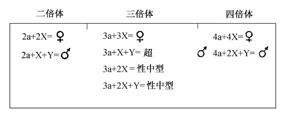
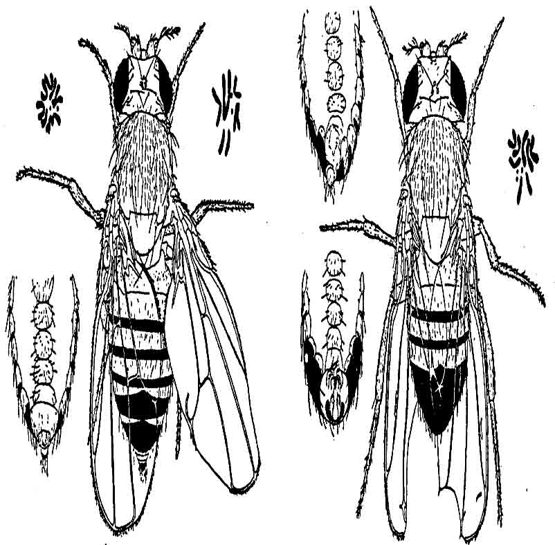

从三倍体果蝇而来的性中型
三倍体雌果蝇的某些后代，属于第一类性中型。三倍体雌蝇的卵子成熟时，染色体分布零散，并且在放出两个极体以后，留存卵子内的染色体的多少不一。这种雌蝇同正常雄蝇交配（雄蝇的精子有一组染色体），得出几种后代（图138）。有理由相信，很多卵子，因为缺少正当组合的染色体来保证新个体的发生，所以完全不能发育；不过在存活下来的卵子里，也有若干三倍体，更多的二倍体（正常型）以及少数性中型。这些性中型（图139）有三组常染色体和两条X染色体（图138）。其公式为：3a+2X（或3a+2X+Y）。因此，性中型的X染色体（虽然和普通雌蝇的一样多）可是它的普通染色体却多了一组。由此可知，性别不决定于现有X染色体的实际数目，而决定于X染色体与其他染色体之间的比率。

图138 示黑腹果蝇中二倍体、三倍体、四倍体与性中型的公式。
四倍型雄蝇（4a+2X+2Y）是想象的，除上述各类外，三倍体雌蝇又产生超雌性（3a+3X）（仿Bridges）

图139 左方示果蝇的雌性性中型，从背腹两面观察。其染色体群包括X两条、大型常染色体（Ⅱ和Ⅲ）各三条，往往还有小型第四染色体（这里有两条）。
右方示雄性性中型，从背腹两面观察。其染色体群包括X两条、第二第三染色体各三条，往往只有两条第四染色体（这里有三条）
Bridges根据上述染色体相互间的特殊关系，断言性别决定于X同其他染色体的平衡作用。我们不妨设想，X染色体含有较多的形成雌性的基因，而其他染色体则含有较多的形成雄性的基因。普通雌蝇为2a+2X，两条X使平衡偏向雌性。普通雄蝇只有一条X，于是使平衡偏向雄性。三倍体3a+3X和四倍体4a+4X的平衡，同普通雌蝇的平衡一样，而实际上，三倍体和四倍体也同普通雌蝇一样。四倍体雄蝇4a+2X+Y（一直还没有得到）的平衡，同普通雄蝇的平衡一样，估计它会和普通雄蝇相同。
三倍体方面的证据，对于性别决定基因的存在，并没有提供详细的知识。如果我们把染色体看成是基因，那么，性别的决定势必同基因有关，然而上述证据却没有证明这种基因究竟像什么样子。即使基因有关系，我们也不能说明代表雌性的，究竟是X上的一个基因，或者是成百的基因。普通染色体的情形也是一样，上述证据也没有说明，如果真有雄性基因的话，这类基因究竟是在所有的染色体上或者只限于一对染色体。
但是这里有两种方法，我们希望有一天它们会帮助我们发现有关影响性别的基因的一些东西。X染色体可以断裂成片，如果真有性基因，便可以借某一种方式的断裂来揭露性基因的位置。另一个希望寄托在基因突变的发生上。如果别的基因都发生突变，如果真有特殊的性基因，这种基因怎么会不发生突变呢？
事实上，由于已经有了一个例子，果蝇第二染色体上的一个突变，引起了性中型的发生。Sturtevant（1920）研究了这个例子，发现这是第二染色体上一些基因发生变化的结果，雌蝇转变成为性中型。可惜这项证据没有证明是不是只有一个基因受到了影响。
据上面所谈过的论证，我们虽然能够从基因的角度说明性别决定公式，但是雌雄两性是否各有其特种基因，目前却得不到直接证明。也可能有这类基因，也可能是所有基因之间的量的平衡决定了性别。但是我们既然有许多证据表现基因在所产生的特种效果上是极不相同的，我认为某些基因比其他基因起着更多的性别分化者的影响，也似乎是极有可能的。